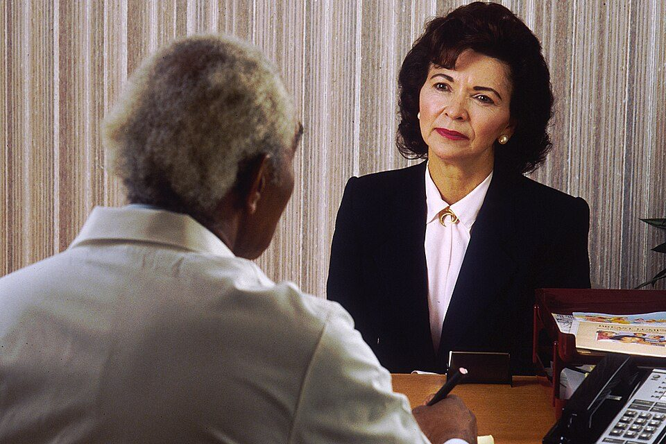

La mente también se cuida
El impacto emocional del cáncer en la persona y en su familia: miedo, ansiedad y depresión, miedo a la recaída, hablar con los hijos, imagen corporal, duelo y dónde pedir ayuda psicológica.
 01
01Qué es la psicooncología
La especialidad que atiende el impacto emocional del cáncer en el paciente y en su familia, y estudia cómo influyen los factores psicológicos y sociales en la enfermedad. Quién la hace y cuándo pedirla.
Leer → 02
02El impacto emocional del diagnóstico
Qué se suele sentir al recibir un diagnóstico de cáncer, por qué las reacciones cambian con el tiempo, qué es normal y qué señales indican que conviene pedir ayuda especializada.
Leer → 03
03Ansiedad, depresión y miedo a la recaída
Cómo reconocer la ansiedad y la depresión durante y después del cáncer, qué es el miedo a la recaída y qué tratamientos psicológicos y farmacológicos han demostrado ayudar.
Leer →04Hablar del cáncer con los hijos
Los niños notan cuando algo pasa en casa. Cómo explicarles el diagnóstico de un padre o una madre según su edad, qué preguntas suelen hacer y qué señales indican que necesitan ayuda.
Leer →05Imagen corporal, autoestima y pareja
Cicatrices, pérdida de pelo, una mastectomía o una ostomía cambian la forma en que una persona se ve. Cómo afectan estos cambios a la autoestima y a la pareja, y qué ayuda a recuperarse.
Leer →06Final de la vida, duelo y familia
Cuando el cáncer avanza, la atención se centra en el bienestar, la dignidad y las preferencias de la persona. Cómo prepararse, qué derechos existen y cómo acompañar el duelo de la familia.
Leer →
07Dónde pedir ayuda psicológica
Recursos en España para pacientes con cáncer y familiares: la unidad de psicooncología del hospital, la atención primaria, las asociaciones con atención gratuita y los teléfonos de crisis.
Leer →